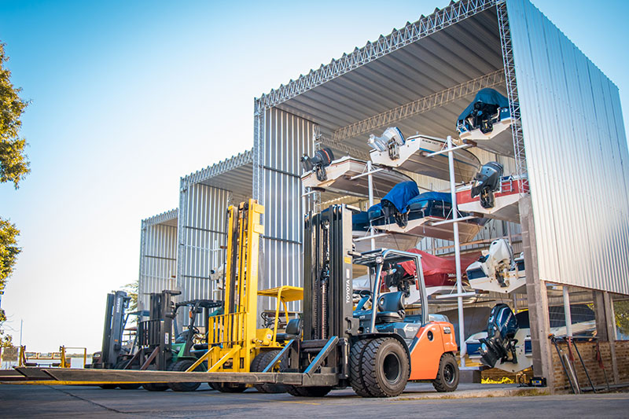

"Décadas compartiendo la pasión por la náutica"

Viendo la necesidad de una guardería náutica dentro de la ciudad de Santa Fe, nace El Club Nautico Don Julio a orillas del rio Parana, aprovechando de este modo, la ubicación geográfica de privilegio y mostrando la fantástica integración entre la ciudad y su rio. Aunque en el frente se encontraba un pequeño salón comercial donde se había comenzado a vender motores y embarcaciones y también contaban con un taller náutico, la guardería fue la que dio que hablar, ya que poseía una gran innovación para esa época: un sistema de ascensor para la botadura de las embarcaciones.
En el año 1990 los hermanos Olivares la transformaron en lo que hoy se conoce como la empresa náutica mas importante de la región. Con un nuevo diseño arquitectónico, ampliando el salón comercial, modernizando el departamento técnico y cambiando radicalmente la guarda de las embarcaciones: se construyo un sistema de camas en altura con 5 pisos - y la utilización de un montacargas quintuplicando, de este modo, la capacidad en los 6000 metros cuadrados de superficie que posee la empresa.
